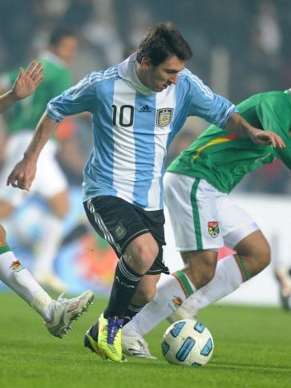

메시의 ‘라스트 탱고’는 새드엔딩… 유효슈팅 ‘0’, 스페인에 막히다
리오넬 메시가 이끈 아르헨티나가 결승에서 스페인에 막혀 유효슈팅 없이 패했다. 노장의 마지막 월드컵 무대는 아쉬운 결말로 끝났다.
주유민 기자 · 2026.07.20
橋국제

아르헨티나가 결승에서 유효슈팅 ‘0’으로 스페인에 완봉패했다고 경향신문이 전했다. 여러 대회를 누빈 메시의 마지막 월드컵 도전은 트로피 대신 아쉬움으로 마무리됐다.
광고 문의 · 300×250스페인은 조직적인 수비와 압박으로 아르헨티나의 공격을 봉쇄했다. 경기 내내 결정적 기회를 만들지 못한 아르헨티나는 무득점에 그쳤다.
한 시대를 대표한 선수의 마지막 무대는 결과와 무관하게 팬들에게 깊은 인상을 남긴다. 세대교체 속에서 젊은 선수들이 새로운 주역으로 떠올랐다.
華橋時報는 스포츠를 결과만이 아니라 한 선수가 걸어온 여정이라는 서사로 본다. 정점과 하강을 모두 겪는 것이 선수의 삶이며, 마지막까지 무대에 선 도전 그 자체가 팬들에게는 또 하나의 감동으로 남는다.
출처·참고 (사실 확인용 — 본문은 직접 재작성)
· 경향신문
· 경향신문